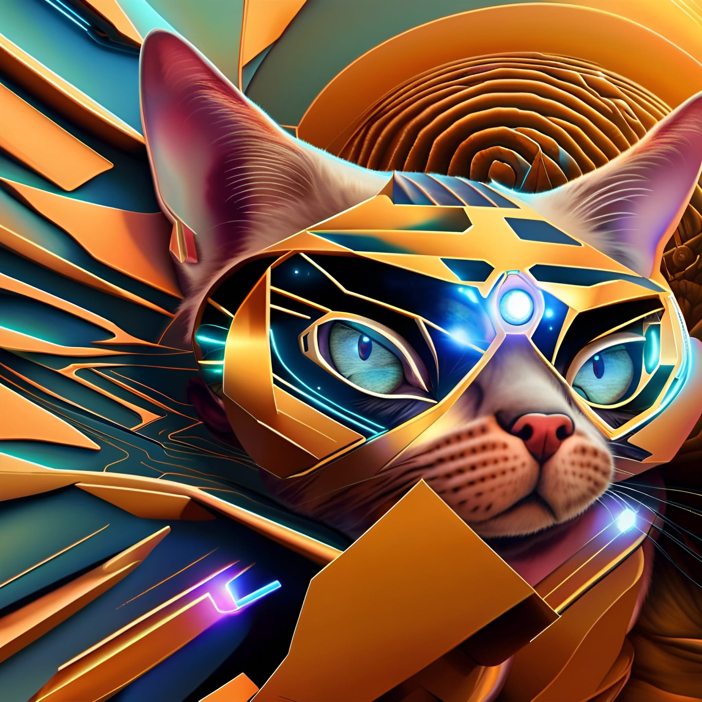

Corporate Archive / People & Places
People & Places
The cats who run the company, the partners who move its goods, and the worlds its work depends on.
Key personnel
| Name | Role | Notes |
|---|---|---|
| Laser 128 | Chief Engineer | Led installation of Zero-Gravity Flavor Dispersion units aboard orbital facilities. |
| Supervisor | Logistics Director | Co-led orbital flavor-dispersion rollout; oversees interstellar shipping. |
| Value Meal | R&D Mastermind | Co-perfected Time-Release Crunchies. |
| Speedy | R&D Mastermind | Co-perfected Time-Release Crunchies. |
| Heathcliff | Campaign Face | Star of "Bite of the Future," leaping through a holographic tuna waterfall on the Orion Broadcast Network. |
Partners & ambassadors
- Spacetrucker — the key ambassador, delivering U.C.F. products across the galaxy; the tie to the public storefront at spacetruckerhighlife.com.
- Astrovets United — collaboration on advanced nutritional research.
- Intergalactic Pet Supplies Retailers Assoc. — ensures wide availability of U.C.F. products.
- Martian feline communities — partnership to develop formulas for cats with evolved dietary requirements.
The workforce doctrine
At United Cat Foods, we believe that embracing diversity in all its forms is key to innovation… a workplace where every individual — whether human, cat, or thinking machine — can thrive and contribute to our collective success. — Diversity & Inclusion Initiative, Jan 2024
U.C.F. formally embraces three kinds of worker — humans, intelligent cats, and thinking machines — with equal opportunity, ergonomic workspaces for cats, tech-adapted environments for machines, and tailored health and wellness programs for each. It is the clearest statement of the company's central theme: a future built on collaboration across species and substrates.
Places
| Location | Significance |
|---|---|
| Viroqua Prime | Corporate headquarters; dateline of the "Bite of the Future" press cycle. |
| Utopia Planitia | Site of the Olfactory Research Laboratory, staffed entirely by feline scientists. |
| Mare Tranquillitatis | Lunar aquafarms supplying moon-harvested salmon for Lunar Salmon Supreme. |
| Alpha Centauri | Source of the botanical herb catalog (Nebula Nettle, Orbiting Oregano, Centaurian Silvermint). |
| L5 habitat gardens | Zero-gravity catnip blooms grown year-round for renewable enrichment. |
| Mars | Home of partner feline communities with evolved dietary needs. |
| The rings of Saturn | Source of the cosmic spices in Stellar Salmon Delight. |
On the floor

